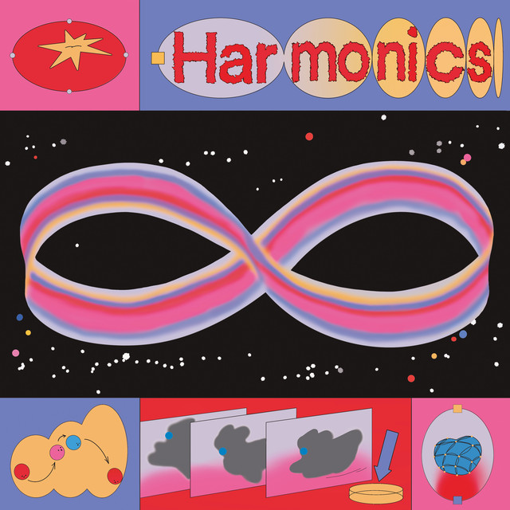

Joe Goddard - Harmonics



Información del álbum facilitada por discogs.com:
Fecha de lanzamiento: 2024
Géneros: Electronic
Estilos: House, Nu-Disco, Synth-pop
Pais: Italy
Votos: Media de 5.0 con 1 votos
Sello: Ariston
Tracklist:
A1. Moments Die (feat. Barrie)
A2. Progress (feat. Ibibio Sound Machine)
A3. Destiny (feat. Findia)
B1. New World (Flow) (feat. Fiorious)
B2. When Love’s Out Of Fashion (feat. Oranje)
B3. Folow You
B4. On My Mind
C1. Summon (feat. Hayden Thorpe)
C2. When You Call (feat. Findia)
C3. Out At Night
C4. Mountains (feat. Al Doyle & Alexis Taylor)
D1. Ghosts (feat. Tom McFarland)
D2. Miles Away (feat. Falle Nioke)
D3. Revery (feat. Alabaster DePlume)